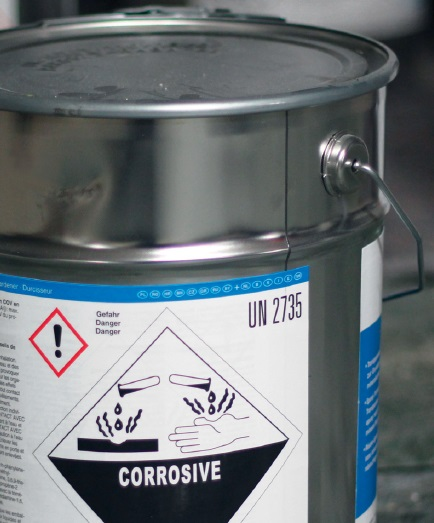

Sie haben als Bauunternehmer beim Einsatz von Gefahrstoffen vieles zu beachten. Der Umfang der Vorschriften erschwert es, die wesentlichen Punkte zu erkennen, an die Sie denken müssen. Im Folgenden sind die Aufgaben zusammengefasst, die Sie nach der Gefahrstoffverordnung haben. Daneben finden Sie Hilfen, die Ihnen Ihre BG Bau anbietet, damit Sie diese Aufgaben wirtschaftlich und effizient umsetzen können.
| Aufgaben für Bauunternehmer | Hilfen für Bauunternehmer | |
| (nach der Gefahrstoffverordnung) | (von der Berufsgenossenschaft) | |
| Gefährdungsbeurteilung Sie stellen fest – ggf. in Zusammenarbeit mit dem Auftraggeber – ob die von Ihnen eingesetzten Produkte Gefahrstoffe sind (Kennzeichnung, Sicherheitsdatenblatt); in Abhängigkeit von der Gefährdung legen Sie die entsprechenden Maßnahmen fest und dokumentieren dies. |
Die GISBAU-Informationen zu Produkten am Bau können als Gefährdungsbeurteilung herangezogen werden (Beispiel im Anhang 2). Persönliche Beratung durch die Gefahrstoff- Experten der BG BAU. |
|
| Ersatzstoffe Handelt es sich um einen Gefahrstoff, prüfen Sie, ob es ein Produkt mit einem geringeren gesundheitlichen Risiko gibt. Gibt es Ersatzstoffe, müssen diese in der Regel auch verwendet werden. |
Die GISBAU-Informationen enthalten Hinweise auf Ersatzstoffe. Persönliche Beratung durch Fachleute der BG. |
|
| Gefahrstoffverzeichnis Sie haben ein Verzeichnis aller im Betrieb verwendeten Gefahrstoffe zu führen. |
Eine Sammlung der GISBAU-Informationen zu den von Ihnen verwendeten Produkten wird als Gefahrstoffverzeichnis anerkannt. Hinzuzufügen sind allerdings die Arbeitsbereiche und Mengenangaben. Das Gefahrstoffverzeichnis können Sie auch in Tabellenform führen (Muster siehe Anhang 3). |
|
| Überwachen von
Grenzwerten Sie haben zu ermitteln, ob bei der Verarbeitung von Gefahrstoffen Grenzwerte überschritten sind. Die Grenzwerte sind in den Sicherheitsdatenblättern oder GISBAU-Produktinformationen angegeben. |
Die BG BAU hat bei der Verarbeitung vieler Produkte Messungen durchgeführt und kann Ihnen die Ergebnisse mitteilen. Die messtechnischen Dienste stehen Ihnen bei der Lösung von Fragen zu Gefahrstoffexpositionen zur Verfügung. |
|
| Schutzmaßnahmen Sie legen Schutzmaßnahmen fest, bevor mit gefährlichen Produkten gearbeitet wird. |
Die GISBAU-Informationen enthalten ganz konkrete Angaben zu den erforderlichen Schutzmaßnahmen (z. B. welche Schutzhandschuhe). Die BG BAU bietet auch andere Kurzinformationen wie zum Beispiel die "Bausteine" bzw. die Infomappe an. In Zweifelsfällen können Sie sich persönlich von den Gefahrstoff-Experten und Arbeitsmedizinern der BG beraten lassen. |
|
| Betriebsanweisungen und
Unterweisungen Sie haben Betriebsanweisungen zu erstellen, in denen die Gefahren, die Schutz- und Hygienemaßnahmen und die Verhaltensregeln beschrieben sind. Auf Grundlage der Betriebsanweisungen sind Ihre Beschäftigten zu unterweisen. |
Die Berufsgenossenschaft stellt Ihnen über WINGIS produktbezogene Betriebsanweisungen zur Verfügung, die Sie nur um arbeitsplatzbezogene und tätigkeitsbezogene Informationen ergänzen müssen (z. B. Baustelle, Unfalltelefon, Name des Ersthelfers). Muster für Betriebsanweisungen zu den wichtigsten Gefahrstoffen finden Sie im Anhang 4. |
|
| Arbeitsmedizinische
Vorsorgeuntersuchungen Wenn Mitarbeiter bei der Arbeit mit Gefahrstoffen umgehen, kann in Abhängigkeit vom Ergebnis der Gefährdungsbeurteilung arbeitsmedizinische Vorsorge notwendig werden. |
Der Arbeitsmedizinisch-Sicherheitstechnische Dienst der Berufsgenossenschaft der Bauwirtschaft (ASD der BG BAU) berät Sie über arbeitsmedizinische Vorsorge. Er führt auch für Sie die erforderlichen arbeitsmedizinischen Untersuchungen Ihrer Mitarbeiter durch. |